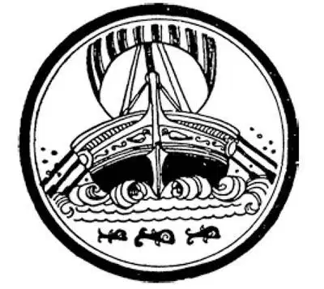
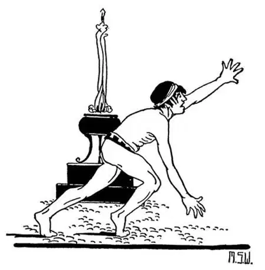
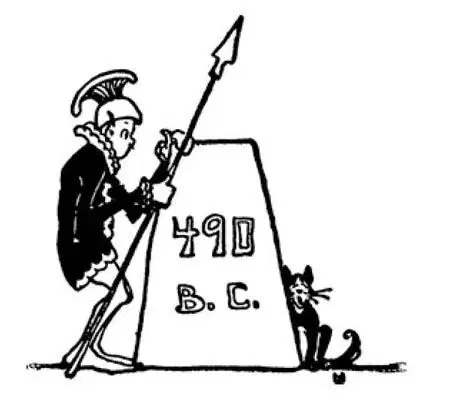

24
Greece vs. Persia
希腊对波斯

DO you know what those two little letters vs . mean between Greece and Persia in the name of this story?
Perhaps you have seen them used on football tickets when there was to be a match between two teams as, for example, Harvard vs. Yale.
They stand for versus , which means against .
Well, there was to be a great match between Greece and Persia, but it wasn't a game; it was a fight for life and death, a fight between little Greece and great big Persia.
Cyrus, the great Persian king, had conquered Babylon and other countries, as well, and he had kept on conquering until Persia ruled most of the world, all except Greece and Italy.
About the year 500 B.C. the new ruler of this vast Persian Empire was a man named Darius. Darius looked at the map, as you might do, and saw that he owned and ruled over a large part of it. What a pity, thought he, that there should be a little country like Greece that did not belong to him!
Darius said to himself, “I must have this piece of land called Greece to complete my empire.” Besides, the Greeks had given him some trouble. They had helped some of his subjects to rebel against him. Darius said, “I must punish these Greeks for what they have done and then just add their country to mine.”
He called his son-in-law and told him to go over to Greece and conquer it.
His son-in-law did as he was told and started out with a fleet and an army to do the punishing. But before his fleet could reach Greece it was destroyed by a storm, and he had to go back home without having done anything.
Darius was very angry at this, mad with his son-in-law and mad with the gods who he thought had wrecked his ships, and he made up his mind that he himself would go and do the punishing and conquering the next time.
First, however, he sent his messengers to all the Greek cities and ordered each of them to send him some earth and some water as a sign that they would give him their land and become his subjects peaceably without a fight.
Many Greek cities were so frightened by the threat of Darius and by his mighty power that they gave in at once and sent earth and water as they were told to do.
But little Athens and little Sparta both hotly refused to do so, in spite of the fact that they were only two small cities against the vast empire of Darius.
Athens took Darius's messenger and threw him into a well, saying, “There is earth and water for you; help yourself”; and Sparta did likewise. Then these two cities joined their forces and called on all their neighbors to join with them to fight for their native land against Darius and Persia.
Darius made ready to conquer Athens and then Sparta.
In order to reach Athens his army had to be carried across the sea in boats. Of course, in those days there were no steamboats. Steamboats were invented nearly two thousand years later.
The only way to make a boat go was with sails or with oars. To make a large boat move with oars, it was necessary to have a great many rowers—three rows one above the other on each side of the boat.
Such a boat was called a trireme , which means three rows of oars. It took about 600 of these boats to carry Darius's army over to Greece. Each of these 600 boats carried, besides the rowers or crew, about 200 soldiers. You can see for yourself how many soldiers Darius had in this army, if there were 600 shiploads of them and 200 soldiers on each ship. Yes, that is an example in multiplication—120,000 soldiers—that's right.

A trireme（一艘三列桨战船）
The Persians sailed across the sea; and this time there was no storm, and they reached the shore of Greece safely. They landed on a spot called the plain of Marathon, which was only about twenty-six miles away from Athens. You will see presently why I have told you just the number of miles—twenty-six.
When the Athenians heard that the Persians were coming, they wanted to get Sparta to help in a hurry, as she had promised to do.
Now, there were no telegraphs or telephones or railroads, of course, in those days. There was no way in which they could send a message to Sparta except to have it carried by hand.
They called on a famous runner named Pheidippides to carry the message. Pheidippides started out and ran the whole way from Athens to Sparta, about one hundred and fifty miles, to carry the message. He ran night and day, hardly stopping at all to rest or to eat, and on the second day he was in Sparta.
The Spartans, however, sent back word that they couldn't start just then; the moon wasn't full, and it was bad luck to start when the moon wasn't full, as nowadays some superstitious people think it bad luck to start on a trip on Friday. They said they would come after a while, when the moon was full.
The Athenians couldn't wait for the moon. They knew the Persians would be in Athens before then, and they didn't want them to get as far as that.
So all the fighting men in Athens left their city and went forth to meet the Persians on the plain of Marathon—twenty-six miles away.
The Athenians were led by a man named Miltiades, and there were only ten thousand soldiers. Besides these, there were one thousand more from a little nearby town, which was friendly with Athens and wished to stand by her—eleven thousand in all. If you figure it out, you will see that there were perhaps ten times as many Persians as there were Greeks, ten Persian soldiers to one Greek soldier.
The Greeks, however, were trained athletes, as we know, and their whole manner of life made them physically fit. The Persians were no match for them. In spite of the small number of Greeks, the large number of Persians were beaten, and beaten badly. Of course the Greeks were far better soldiers than the Persians, for all their training made them so, but more than all this, they were fighting for themselves to save their homes and their families.
Perhaps you have heard the fable of the hound who was chasing a hare. The hare escaped. The hound was made fun of for not catching the little hare. To which the hound replied, “I was only running for my supper; the hare was running for his life.”
The Persian soldiers were not fighting for their homes or families, which were away back across the sea; and it made little difference to them who won, anyway, for most were merely hirelings or slaves; they were fighting for a king because he ordered them to.

The first marathon race（首届马拉松比赛）
Naturally the Greeks were overjoyed at this victory.
Pheidippides, the famous runner, who was now at Marathon, started off at once to carry the joyful news back to Athens, twenty-six miles away. He ran the whole distance without stopping for breath. He had not had time to rest up from his long run to Sparta, which he had taken only a few days before, and so fast did he run this long distance that as soon as he had reached Athens and gasped the news to the Athenians in the market-place he dropped down dead!
In honor of this famous run, they have nowadays in the new Olympic Games, what is called a Marathon race, in which the athletes run this same distance: twenty- six miles. This battle of Marathon took place in 490 B.C. and is one of the most famous battles in all history, for the great Persian army was beaten by one little city and its neighbor, and the Persians had to go back to their homes in disgrace.
A little handful of people, who governed themselves, had defeated a great king with a large army of only hired soldiers or slaves.
But this was not the last the Greeks were to see of the Persians.
【中文阅读】
你们知道这个故事的标题中那个放在“希腊”和“波斯”之间的“对”字表示什么意思吗？
可能你在足球比赛的门票上见过吧？当两支球队比赛的时候，会用这个词，比如说：哈佛vs.耶鲁。
“对”是“对抗”的简称，也就是“与……竞争”或“较量”的意思。
从前，希腊和波斯之间有一场重要的比赛，但不是赛场上的比赛，而是生与死的较量，是弱小的希腊王国和强大的波斯帝国之间的一场战争。
伟大的波斯国王居鲁士，征服了巴比伦和其他一些国家后，继续向外征战，直到波斯统治了世界上大部分地方，除了希腊和意大利。
在公元前500年左右，这个庞大波斯帝国的新任国王是个名叫大流士的人。一天，大流士看着地图，就像你看地图一样，看他所拥有的疆域——地图上好大一片都在他的统治之下，当他看到像希腊这么小的国家居然还不属于他，他觉得这是多么令人遗憾啊。
大流士自言自语道：“我必须拥有这块叫希腊的土地，使我的帝国更完整。”除了这个原因之外，希腊人还总给他制造麻烦。他们帮助他的一些属国反叛他。大流士说：“我必须要惩罚希腊人，让他们为自己的所作所为付出代价，然后把他们的国家纳入我波斯帝国的版图。”
他把他的女婿招来，命令他远征希腊。
他的女婿奉命行事，带着一支舰队和一支军队出发去讨伐希腊。但是，他的舰 队还没到达希腊，就被一场暴风雨摧毁了，他不得不无功而返。
大流士对此非常恼怒，对女婿大发脾气，也发泄了对诸神的不满，认为是他们毁掉了他的战舰，他下定决心准备下一次亲自率军讨伐并征服希腊。
不过，他先派了信使去希腊所有的城邦，命令各个城邦向他献上一点泥土和水，以此表明他们愿意把土地献给他，成为他的臣民，而不必大动干戈了。很多希腊城邦都畏惧大流士的威胁和他的强权，所以，他们立即就按照他要求的那样献上泥土和水。
但是小小的雅典和斯巴达却非常反感，拒绝这么做，虽然它们只是两个很小的城邦，而对抗的却是大流士庞大的帝国。
雅典抓住了大流士的信使，把他扔到了井里，说：“那儿有给你的土和水，你自己请便吧。”斯巴达也同样这么做了。于是，这两个城邦把他们的军队联合在一起，并号召他们的邻邦也加入进来，为保卫自己的国土抵抗大流士和波斯。
大流士已经做好了相继征服雅典和斯巴达的准备。
要到达雅典，他的军队必须先乘船穿过大海。当然，那时候还没有蒸汽机动轮船，这种轮船差不多两千年以后才发明的。
当时，唯有帆和桨才能推动船前行。为了用桨推动一艘大船前行，必须有很多的桨手——船的每边从高到低各有三排桨。
这种船叫“三列桨战船”，就是说船上要装有三排桨。要载着大流士的军队越过大海来到希腊，需要大约六百艘这样的大型战船。六百艘战船的每一艘上除了桨手和船员，还有大约两百名士兵。你们可以自己算算大流士的军队有多少士兵，如果有六百艘装载士兵的战船，每艘战船上有两百名士兵。是啊，这就是一道乘法计算题——一共有十二万个士兵——没错。
波斯人乘船穿过大海，这次没有遇到暴风雨，他们安全地到达希腊海岸。他们在一个叫马拉松平原的地方登陆，离雅典只有大约26英里。马上你就明白，我为什么告诉你们这个具体的英里数——26。
雅典人听说波斯人快要兵临城下，他们急需斯巴达人前来支援，对此斯巴达人有过承诺。
当然，那时候可没有电报、电话或铁路这些东西，所以，除了派人去斯巴达送信，也没有别的办法了。
他们请求一个有名的长跑好手斐里庇得斯去送信。斐里庇得斯带着信立即动身，从雅典一直跑到斯巴达，全程大约150英里。他不分昼夜地奔跑，几乎没有停下来休息或吃东西，第二天，他就到了斯巴达。
然而，斯巴达人却回信说，他们此时还不能出发，因为月亮不够圆；如果不是满月的时候就出发，会交噩运，就像如今有些迷信的人认为周五出门旅行会不吉利一样。斯巴达人说等几天月亮圆了，他们就会来。
但是雅典人不可能等到月圆之时了。他们知道波斯人在月圆之前就会到达雅典，而他们可不想波斯军队进展到那一步。
因此，雅典所有的战士离开他们的城市，前往26英里以外的马拉松平原迎战波斯军队。
雅典人由一个名叫米太亚德的人做统帅，而他们仅有一万名士兵，除此以外，还有来自附近一个小城邦的一千名士兵，这个小城邦和雅典很友好，愿意支持它对抗波斯，这样一共有一万一千名战士。如果你算一算，就会知道波斯士兵大约是希腊士兵的十倍，也就是说，十个波斯士兵对一个希腊士兵。
不过，我们知道，希腊人都是训练有素的运动员，他们整个的生活方式就是让他们身强力壮。这一点波斯人可不是他们的对手。尽管希腊士兵的人数很少，人数众多的波斯人却被打败了，而且是败得一塌糊涂。当然，希腊人相比波斯人来说，是更优秀的士兵，因为他们长期的训练使他们英勇善战。但是除此以外，他们是为自己而战，是为捍卫自己的家园和家庭而战。
或许，你听说过那个猎犬追赶野兔的寓言。野兔逃脱了。猎犬因为没有捉到那只小小的野兔而受到取笑。对此，猎犬回答道：“我只是为吃一顿晚餐而奔跑，野兔却是为了保命而奔跑啊。”
波斯的战士们不是为他们远在大海那边的家园和家人而战；不管怎样，对他们而言谁赢了战争都没有什么关系，因为他们大部分人只是雇佣兵或奴隶；他们为国王而战只是因为他命令他们这样做罢了。
希腊人当然为这次的胜利欣喜欲狂。
斐里庇得斯，那位著名的长跑运动员，当时就在马拉松平原，他立即出发要把令人喜悦的捷报带回26英里以外的雅典去。他没有停下来歇一口气就跑完了这26英里。仅仅几天前他长途奔跑去斯巴达，返回后还没有时间得到充分休息，而这次这么长的距离他又跑得那么快，所以他刚跑到雅典，气喘吁吁地把消息告诉了正在集市上的雅典人，就倒地身亡了。
为了纪念这次著名的长跑，现代奥林匹克运动会上有一个项目就叫马拉松赛跑，在这个比赛中，运动员要跑同样的距离——26英里。这场马拉松战役发生在公元前490年，也是世界历史上最著名的战役之一，因为强大的波斯军队被一个小小的城邦和它的邻邦打败了，波斯人只得灰溜溜地回到自己的国家。
一个自治国家的极少数人打败了一个庞大帝国的国王率领的军队——一支全部由雇佣兵和奴隶组成的军队。
但是，这并不是希腊人最后一次迎战波斯人。

公元前490年